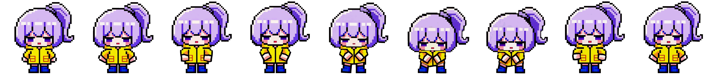

04 / 시스템 규칙과 제작
팀 프로젝트 / 2D 쿼터뷰 로그라이트
프로젝트 목록 ↗Project BB
무작위로 만들어지는 공간에도 진행 기준이 필요했습니다.
플레이어 조작과 몬스터 행동부터 성장, 방 진행, 상점까지 시스템 규칙을 정리한 팀 프로젝트입니다. 무작위 맵에서 발생하는 예외와 입장 직후 피격 문제를 살피고, 실제 공간 수치를 확인해 진행 조건을 구체화했습니다. 시스템 기획과 함께 캐릭터 스프라이트와 스토리 애니메이션 제작도 맡았습니다.

- 제작 기간
- 2026.03.17–04.10
- 내 역할
- 시스템 기획
AI 리소스 제작과 리터칭 - 협업 구성
- 기획 7명, 개발 5명
- 주요 산출물
- 기획서와 데이터 테이블
스프라이트, 애니메이션, VFX
생성, 배치, 진행 규칙을 나눠 전달했습니다.
방과 문, 복도가 모두 무작위로 만들어지면서 문을 닫고 여는 규칙에 예외가 많아졌습니다. 전체 흐름을 한 번에 설명하기보다 맵 생성, 방 배치, 방 진행의 세 흐름으로 나눠 각 단계에서 처리할 조건을 정리했습니다.
맵은 스테이지를 재귀적으로 분할해 방을 만든 뒤 복도로 연결합니다. 방 배치에서는 스폰 방과 가장 먼 보스 방, 보스 직전 정비 방을 지정했습니다. 진행 규칙은 플레이어 입장 시 문을 닫고, 몬스터 수가 0이 되면 문을 열어 완료 상태로 전환하도록 정리했습니다.
입장 직후의 피격을 줄이기 위해 공간을 확인했습니다.
방에 들어오자마자 공격을 받는 경험은 불쾌할 수 있다고 봤습니다. 세이프 존을 정할 때는 문서 안의 수치만으로 판단하지 않고 Unity에서 실제 방 크기와 반경을 확인했습니다.
실측 후 반지름 4의 원형 입구 세이프 존을 적용했습니다. 무작위 생성 규칙에서는 정상적인 진행 흐름 외에도, 방과 문, 복도가 만나는 조합을 함께 점검해야 한다는 점을 배웠습니다.
무작위 규칙의 조합별 예외를 먼저 목록화하고, 실제 공간 수치로 검증하려고 합니다. 문이 닫히는 시점과 입구 주변의 배치 조건도 함께 확인할 항목으로 남겼습니다.
기본 형태를 정한 뒤 동작과 컷신으로 확장했습니다.
캐릭터는 전면과 후면, 측면의 기본 형태를 먼저 정한 뒤 공격, 대기, 걷기, 보스 동작으로 확장했습니다. AI로 만든 이미지는 Aseprite에서 리터칭하며 스프라이트 시트로 정리했습니다.
컷신도 초안에서 끝내지 않고 레퍼런스와 채색 스케치를 바탕으로 AI 보정과 리터칭을 거쳤습니다. 분리 리소스와 경고 오버레이를 추가하고 PSD에서 수정한 장면을 다듬어, 2분 30초 분량의 스토리 애니메이션으로 제작했습니다.
